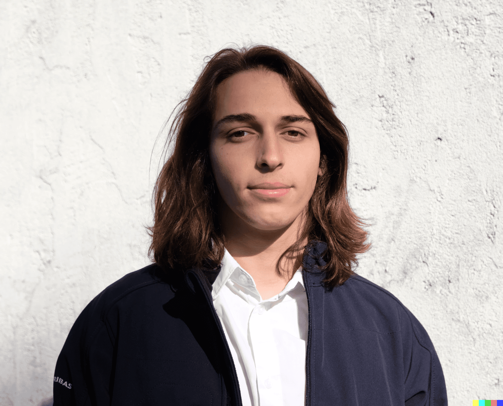

Hello, I'm Simon NATAF
A first-year student at IESEG 👨‍🎓

I am a creative individual who has a passion for photography, sports, and travel. I find joy in capturing life's moments through my lens and sharing them with the world. I also love to stay active and explore new places, experiencing different cultures and creating unforgettable memories. Whether it's behind the camera or on an adventure, I always strive to live life to the fullest.
So to sum up : 📸 🀠ğŸŒ
Photography 📸
Photography allows me to freeze time and preserve memories. It gives me the opportunity to see the world from a unique perspective and capture its beauty. Through photography, I can express my creativity and emotions, telling a story with each click of the shutter.

Sport 🏀
I love sports because it helps me stay physically fit and healthy. Participating in sports also provides a sense of accomplishment and satisfaction. Furthermore, sports bring people together and promote teamwork and friendship.
Travel 🌍
I love traveling because it exposes me to different cultures and ways of life. Exploring new places and experiencing new adventures is truly exhilarating. Traveling also allows me to escape the monotony of daily life and broaden my perspective.